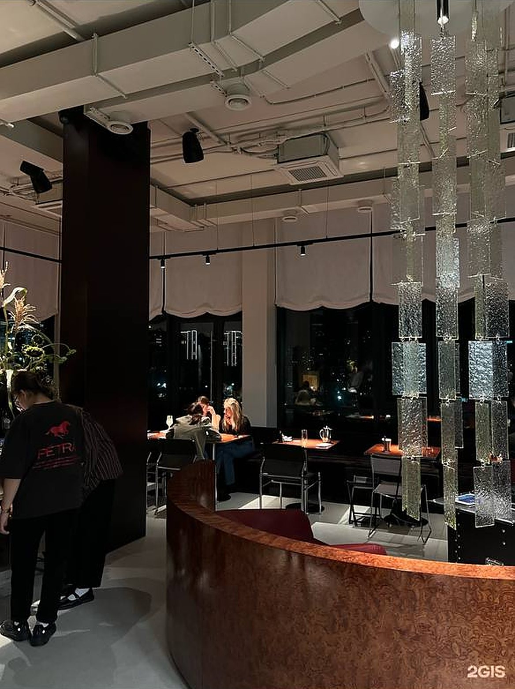
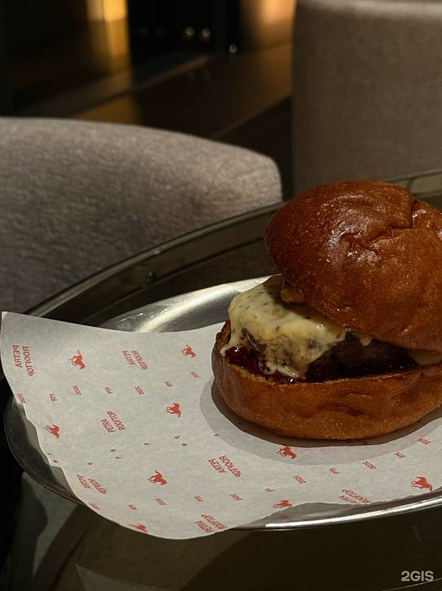

Свет решает всё
Днём зал наполняет естественный свет из окон в пол, вечером — свечи, бумажные торшеры и точечные лампы над столами. Освещение здесь продумано так же тщательно, как меню.

Pétra Rooftop открылся осенью 2026 года на шестом этаже дома на Спартака, 5/1 — в нескольких минутах от главных улиц центра.
Pétra — это высота, свет и неторопливость. Место, где обед у окна плавно перетекает в закат, а закат — в долгий ужин с огнями центра за стеклом.
Мы хотели сделать ресторан, в который приходят не «поесть», а провести время. Поэтому здесь нет громких деталей ради эффекта: только тёплое дерево, мягкий текстиль, хром и стекло — и город, который становится частью интерьера.
Кухня — понятная и точная. Европейская основа, хороший продукт, внимательная подача: от бурраты с печёным виноградом до марокканского осьминога и стейка с трюфельным пюре. Бар — с авторскими коктейлями и видом на закат.

Днём зал наполняет естественный свет из окон в пол, вечером — свечи, бумажные торшеры и точечные лампы над столами. Освещение здесь продумано так же тщательно, как меню.
Мало ингредиентов, но каждый на своём месте. Блюда, которые узнаёшь с первого взгляда и запоминаешь с первого вкуса.
Здесь не торопят. Можно прийти на обед и остаться до заката, а можно подняться после работы на один коктейль — и задержаться до полуночи.

Сердце зала — изогнутая стойка, облицованная шпоном корня ореха, и каскад рельефного стекла над ней. Те же тёплые узоры повторяются на каждом столе.
Рядом — бордовая кожа, хромированные стулья, бархатные диваны вдоль окон и льняные римские шторы с мягкой волной.

Мягкие круглые кресла, столики из дымчатого стекла и светящиеся торшеры. Бар на подиуме у панорамного окна — лучшее место, чтобы смотреть, как зажигается центр.

Деревянный настил по периметру крыши, стеклянное ограждение и вид на Обь. В тёплый сезон здесь проходят вечера с живой музыкой и закатами, ради которых стоит подняться на шестой этаж.
Символ Pétra — конь в прыжке. Он встречает гостей в зале и прячется в мелочах.

Силуэт коня из сахарной пудры на тирамису.

Ягодная пудра на пене фирменного коктейля.

Фирменная бумага, подставки и меню с красным конём.

Спартака, 5/1 · 6 этаж · 12:00 — 24:00